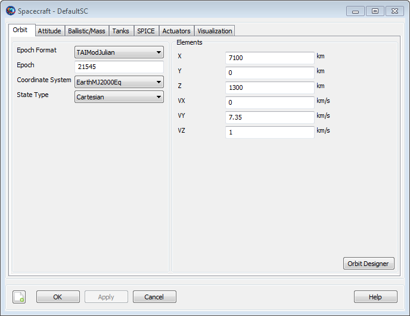
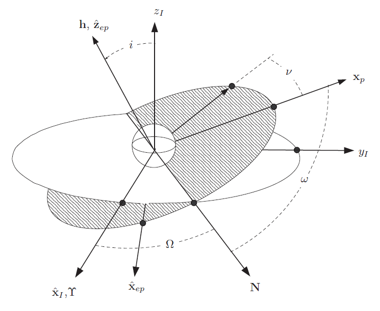

Spacecraft Orbit State
Spacecraft Orbit State — The orbital initial conditions
Description
GMAT supports a suite of state types for defining the orbital state, including Cartesian and Keplerian, among others. In addtion, you can define the orbital state in different coordinate systems, for example EarthMJ2000Eq and EarthFixed. GMAT provides three general state types that can be used with any coordinate system: , SphericalAZFPA, and SphericalRADEC. There are three additional state types that can be used with coordinate systems centered at a celestial body: Keplerian, ModifiedKeplerian, and Equinoctial.
In the section called “Remarks” below, we describe each state type in detail including state-type definitions, singularities, and how the state fields interact with the CoordinateSystem and Epoch fields. There are some limitations when setting the orbital state during initialization, which are discussed in the section called “Remarks”. We also include examples for setting each state type in commonly used coordinate systems.
See Also: Spacecraft, Propagator, and Spacecraft Epoch
Fields
| Field | Description | ||||||||||||
|---|---|---|---|---|---|---|---|---|---|---|---|---|---|
| AltEquinoctialP | A measure of the orientation of the orbit. AltEquinoctialP and AltEquinoctialQ together govern how an orbit is oriented. AltEquinotialP = sin(INC/2)*sin(RAAN).
| ||||||||||||
| AltEquinoctialQ | A measure of the orientation of the orbit. AltEquinoctialP and AltEquinoctialQ together govern how an orbit is oriented. AltEquinotialP = sin(INC/2)*cos(RAAN).
| ||||||||||||
| AOP | The orbital argument of periapsis expressed in the coordinate system chosen in the CoordinateSystem field.
| ||||||||||||
| AZI | The orbital velocity azimuth expressed in the coordinate system chosen in the CoordinateSystem field.
| ||||||||||||
BrouwerLongAOP BrouwerShortAOP | Brouwer-Lyddane long-term averaged (short-term averaged) mean argument of periapsis.
| ||||||||||||
BrouwerLongECC BrouwerShortECC | Brouwer-Lyddane long-term averaged (short-term averaged) mean eccentricity.
| ||||||||||||
BrouwerLongINC BrouwerShortINC | Brouwer-Lyddane long-term averaged (short-term averaged) mean inclination.
| ||||||||||||
BrouwerLongMA BrouwerShortMA | Brouwer-Lyddane long-term averaged (short-term averaged) mean MA (mean anomaly).
| ||||||||||||
BrouwerLongRAAN BrouwerShortRAAN | Brouwer-Lyddane long-term averaged (short-term averaged) mean RAAN (right ascension of the ascending node).
| ||||||||||||
BrouwerLongSMA BrouwerShortSMA | Long-term averaged (short-term averaged) mean semi-major axis.
| ||||||||||||
| CoordinateSystem | The coordinate system with respect to which the orbital state is defined. The CoordinateSystem field is dependent upon the DisplayStateType field. If the coordinate system chosen by the user does not have a gravitational body at the origin, then the state types Keplerian, ModifiedKeplerian, and Equinoctial are not permitted.
| ||||||||||||
| DEC | The declination of the orbital position expressed in the coordinate system chosen in the CoordinateSystem field.
| ||||||||||||
| DECV | The declination of orbital velocity expressed in the coordinate system chosen in the CoordinateSystem field.
| ||||||||||||
| Delaunayg | Delaunay "g" element, identical to AOP, expressed in the coordinate system chosen in the CoordinateSystem field.
| ||||||||||||
| DelaunayG | Delaunay "G" element, the magnitude of the orbital angular momentum, expressed in the coordinate system chosen in the CoordinateSystem field.
| ||||||||||||
| Delaunayh | Delaunay "h" element, identical to RAAN, expressed in the coordinate system chosen in the CoordinateSystem field.
| ||||||||||||
| DelaunayH | Delaunay "H" element, the z-component of the orbital angular momentum vector, expressed in the coordinate system chosen in the CoordinateSystem field.
| ||||||||||||
| Delaunayl | Delaunay "ℓ" element, identical to the mean anomaly, expressed in the coordinate system chosen in the CoordinateSystem field.
| ||||||||||||
| DelaunayL | Delaunay "L" element, related to the two-body orbital energy, expressed in the coordinate system chosen in the CoordinateSystem field.
| ||||||||||||
| DisplayStateType | The orbital state type displayed in the GUI. Allowed state types are dependent upon the selection of CoordinateSystem. For example, if the coordinate system does not have a celestial body at the origin, Keplerian, ModifiedKeplerian, and Equinoctial are not allowed options for DisplayStateType.
| ||||||||||||
| ECC | The orbital eccentricity expressed in the coordinate system chosen in the CoordinateSystem field.
| ||||||||||||
| EquinoctialH | A measure of the orbital eccentricity and argument of periapsis. EquinoctialH and EquinoctialK together govern how elliptic an orbit is and where the periapsis is located. EquinotialH = ECC * sin(AOP + RAAN) .
| ||||||||||||
| EquinoctialK | A measure of the orbital eccentricity and argument of periapsis. EquinoctialH and EquinoctialK together govern how elliptic an orbit is and where the periapsis is located. EquinotialK = ECC * cos(AOP + RAAN) .
| ||||||||||||
| EquinoctialP | A measure of the orientation of the orbit. EquinoctialP and EquinoctialQ together govern how an orbit is oriented. EquinotialP = tan(INC/2)*sin(RAAN).
| ||||||||||||
| EquinoctialQ | A measure of the orientation of the orbit. EquinoctialP and EquinoctialQ together govern how an orbit is oriented. EquinotialQ = tan(INC/2)*cos(RAAN).
| ||||||||||||
| FPA | The orbital flight path angle expressed in the coordinate system chosen in the CoordinateSystem field.
| ||||||||||||
| Id | The spacecraft Id used in tracking data files. This field is only used for EstimationPlugin protype functionality.
| ||||||||||||
| INC | The orbital inclination expressed in the coordinate system chosen in the CoordinateSystem field.
| ||||||||||||
IncomingBVAZI OutgoingBVAZI | IncomingBVAZI/OutgoingBVAZI is the B-vector azimuth at infinity of the incoming/outgoing asymptote measured counter-clockwise from south. If C3Energy < 0 the apsides vector is substituted for the outgoing/incoming asymptote.
| ||||||||||||
IncomingC3Energy OutgoingC3Energy | C3 energy. C3Energy = -mu/SMA. IncomingC3Energy/OutgoingC3Energy differ only in that they are associated with the IncomingAsymptote and OutgoingAsymptote state representations, respectively.
| ||||||||||||
IncomingDHA OutgoingDHA | IncomingDHA/OutgoingDHA is the declination of the incoming/outgoing asymptote. If C3Energy < 0 the apsides vector is substituted for the incoming/outgoing asymptote..
| ||||||||||||
IncomingRadPer OutgoingRadPer | The orbital radius of periapsis. The radius of periapsis is the minimum distance (osculating) between the spacecraft and celestial body at the origin of coordinate system. IncomingRadPer/OutgoingRadPer differ from RadPer only in that they are associated with the IncomingAsymptote and OutgoingAsymptote state representations, respectively.
| ||||||||||||
IncomingRHA OutgoingRHA | IncomingRHA/OutgoingRHA is the right ascension of the incoming/outgoing asymptote. If C3Energy < 0 the apsides vector is substituted for the incoming/outgoing asymptote.
| ||||||||||||
| MLONG | A measure of the location of the spacecraft in it's orbit. MLONG = AOP + RAAN + MA.
| ||||||||||||
| ModEquinoctialF | Components of the eccentricity vector (with ModEquinoctialG). The eccentricity vector has a magnitude equal to the eccentricity and it points from the central body to perigee. ModEquinoctialF = ECC * cos(AOP+RAAN)
| ||||||||||||
| ModEquinoctialG | Components of eccentricity vector (with ModEquinoctialF). ModEquinoctialG = ECC * sin(AOP+RAAN)
| ||||||||||||
| ModEquinoctialH | Identical to EquinoctialQ.
| ||||||||||||
| ModEquinoctialK | Idential to EquinoctialP.
| ||||||||||||
| NAIFId | The spacecraft Id used in SPICE kernels.
| ||||||||||||
| OrbitSpiceKernelName | SPK Kernels for spacecraft orbit. SPK orbit kernels have extension ".BSP". This field cannot be set in the Mission Sequence.
| ||||||||||||
| PlanetodeticAZI | The orbital velocity azimuth expressed in the coordinate system chosen in the CoordinateSystem field. Unlike the AZI field, PlanetodeticAZI is associated with the Planetodetic state representation, which is only valid for coordinate systems with BodyFixed axes.
| ||||||||||||
| PlanetodeticHFPA | The orbital horizontal flight path angle expressed in the coordinate system chosen in the CoordinateSystem field. PlanetodeticHFPA is only valid for coordinate systems with BodyFixed axes.
| ||||||||||||
| PlanetodeticLAT | The planetodetic latitude expressed in the coordinate system chosen in the CoordinateSystem field. This field is only valid for coordinate systems with BodyFixed axes.
| ||||||||||||
| PlanetodeticLON | The planetodetic longitude expressed in the coordinate system chosen in the CoordinateSystem field. This field is only valid for coordinate systems with BodyFixed axes.
| ||||||||||||
| PlanetodeticRMAG | The magnitude of the orbital position vector expressed in the coordinate system chosen in the CoordinateSystem field. Unlike the RMAG field, PlanetodeticRMAG is associated with the Planetodetic state representation, which is only valid for coordinate systems with BodyFixed axes.
| ||||||||||||
| PlanetodeticVMAG | The magnitude of the orbital velocity vector expressed in the coordinate system chosen in the CoordinateSystem field. Unlike the VMAG field, PlanetodeticVMAG is associated with the Planetodetic state representation, which is only valid for coordinate systems with BodyFixed axes.
| ||||||||||||
| RA | The right ascension of the orbital position expressed in the coordinate system chosen in the CoordinateSystem field.
| ||||||||||||
| RAAN | The orbital right ascension of the ascending node expressed in the coordinate system chosen in the CoordinateSystem field.
| ||||||||||||
| RadApo | The orbital radius of apoapsis expressed in the coordinate system chosen in the CoordinateSystem field. The radius of apoapsis is the maximum distance (osculating) between the Spacecraft and celestial body at the origin of CoordinateSystem.
| ||||||||||||
| RadPer | The orbital radius of periapsis expressed in the coordinate system chosen in the CoordinateSystem field. The radius of periapsis is the minimum distance (osculating) between the Spacecraft and celestial body at the origin of CoordinateSystem.
| ||||||||||||
| RAV | The right ascension of orbital velocity expressed in the coordinate system chosen in the CoordinateSystem field.
| ||||||||||||
| RMAG | The magnitude of the orbital position vector expressed in the coordinate system chosen in the CoordinateSystem field.
| ||||||||||||
| SemilatusRectum | Magnitude of the position vector when at true anomaly of 90 deg.
| ||||||||||||
| SMA | The orbital semi-major axis expressed in the coordinate system chosen in the CoordinateSystem field.
| ||||||||||||
| TA | The orbital true anomaly expressed in the coordinate system chosen in the CoordinateSystem field.
| ||||||||||||
| TLONG | True longitude of the osculating orbit. TLONG = RAAN + AOP + TA
| ||||||||||||
| VMAG | The magnitude of the orbital velocity vector expressed in the coordinate system chosen in the CoordinateSystem field.
| ||||||||||||
| VX | The x-component of the Spacecraft velocity with respect to the coordinate system chosen in the spacecraft's CoordinateSystem field.
| ||||||||||||
| VY | The y-component of the Spacecraft velocity with respect to the coordinate system chosen in the spacecraft's CoordinateSystem field.
| ||||||||||||
| VZ | The z-component of the Spacecraft velocity with respect to the coordinate system chosen in the spacecraft's CoordinateSystem field.
| ||||||||||||
| X | The x-component of the Spacecraft position with respect to the coordinate system chosen in the spacecraft's CoordinateSystem field.
| ||||||||||||
| Y | The y-component of the Spacecraft position with respect to the coordinate system chosen in the spacecraft's CoordinateSystem field.
| ||||||||||||
| Z | The z-component of the Spacecraft position with respect to the coordinate system chosen in the spacecraft's CoordinateSystem field.
|
GUI
|  |
The Spacecraft orbit state dialog box allows you to set the epoch, coordinate system, and state type values for the Spacecraft orbital state. When you specify an orbital state, you define the state in the representation selected in the StateType menu, with respect to the coordinate system specified in the CoordinateSystem menu, at the epoch defined in the Epoch menu. If the selected CoordinateSystem is time varying, the epoch of the coordinate system is defined by the Epoch field, and changing the epoch changes the inertial representation of the orbital state.
A change in Epoch Format causes an immediate update to Epoch to reflect the chosen time system and format.
The Keplerian, ModifiedKeplerian, and Equinoctial state types cannot be computed if the CoordinateSystem does not have a central body at the origin, or if the CoordinateSystem references the current spacecraft (resulting in a circular reference). For example, if you have selected the Keplerian state type, coordinate systems for which the Keplerian elements cannot be computed do not appear in the CoordinateSystem menu. Similarly, if you have selected a CoordinateSystem that does not have a celestial body at the origin, Keplerian-based state types will not appear as options in the menu. The Planetodetic state type cannot be selected untill the CoordinateSystem has BodyFixed axes.
Remarks
Cartesian State
The Cartesian state is composed of the position and velocity components expressed with respect to the selected CoordinateSystem.
Keplerian and Modified Keplerian State Types
The Keplerian and ModifiedKeplerian state types use the osculating Keplerian orbital elements with respect to the selected CoordinateSystem. To use either the Keplerian or ModifiedKeplerian state type, the Spacecraft’s coordinate system must have a central body at the origin. The two representations differ in how the orbit size and shape are defined. The Keplerian state type is composed of the following elements: SMA, ECC, INC, RAAN, AOP, and TA. The ModifiedKeplerian state type is composed of the following elements: RadApo, RadPer, INC, RAAN, AOP, and TA. The tables and figures below describe each Keplerian state element in detail including singularities.
Geometry of the Keplerian Elements
| Name | Description |
|---|---|
| SMA | SMA contains information on the type and size of an orbit. If SMA > 0 the orbit is elliptic. If SMA <0 the orbit is hyperbolic. SMA is infinite for parabolic orbits. |
| ECC | ECC contains information on the shape of an orbit. If ECC = 0, then the orbit is circular. If 0 < ECC < 1, the orbit is elliptical. If , ECC = 1 the orbit is parabolic. If ECC > 1 then the orbit is hyperbolic. |
| INC | INC is the angle between the orbit angular momentum vector and the z-axis. If INC < 90 deg., then the orbit is prograde. If INC > 90 deg, then the orbit is retrograde |
| RAAN | RAAN is defined as the angle between x-axis and the node vector measured counterclockwise. The node vector is defined as the cross product of the z-axis and orbit angular momentum vector. RAAN is undefined for equatorial orbits. |
| AOP | AOP is the angle between a vector pointing at periapsis and a vector pointing in the direction of the line of nodes. AOP is undefined for circular orbits. |
| TA | TA is defined as the angle between a vector pointing at periapsis and a vector pointing at the spacecraft. TA is undefined for circular orbits. |
|  |
The Keplerian and ModifiedKeplerian state types have several singularities. The table below describes the different singularities and how each is handled in the state conversion algorithms.
| Singularity | Comments and Behavior |
|---|---|
| ECC = 1 | SMA is infinite and cannot be used to define the size of the orbit. GMAT requires ECC < 0.9999999 or ECC > 1.0000001 when setting ECC or when performing conversions. For transformations performed near these limits, loss of precision may occur. |
| ECC = 0 | AOP is undefined. If ECC <= 1e-11, GMAT sets AOP to zero in the conversion from Cartesian to Keplerian/ModKeplerian and includes all orbital-plane angular displacement in the true anomaly. |
| SMA = 0 | Results in a singular conic section. GMAT requires |SMA| > 1 meter when inputting SMA. |
| SMA = INF | SMA is infinite and another parameter is required to capture the size of the orbit. Keplerian elements are not supported. |
| INC = 0 | RAAN is undefined. If INC < 6e-10, GMAT sets RAAN to 0 in the conversion from Cartesian to Keplerian/ModKeplerian. Then, if ECC < 1e-11, AOP is set to 0 and GMAT includes all angular displacement between the x-axis and the spacecraft in the true anomaly. If ECC ≥ 1e-11, then AOP is computed as the angle between the eccentricity vector and the x-axis. |
| INC = 180 | RAAN is undefined. If INC > (180 - 6e-10), GMAT sets RAAN to 0 in the conversion from Cartesian to Keplerian/ModKeplerian. Then, if ECC < 1e-11, AOP is set to 0 and GMAT includes all angular displacement between the x-axis and the spacecraft in the true anomaly. If ECC ≥ 1e-11, then AOP is computed as the angle between the eccentricity vector and the x-axis. |
| RadPer = 0 | Singular conic section. GMAT requires RadPer > 1 meter in state conversions. |
| RadApo = 0 | Singular conic section. GMAT requires abs(RadApo) > 1 meter in state conversions. |
Delaunay State Type
The conversion between Delaunay and Cartesian is performed passing through classical Keplerian state. Therefore, Delaunay state cannot represent parabolic orbits. Also, the Delaunay state cannot represent hyperbolic orbits because of the definition of DelaunayL, which is not a real value when SMA is negative. The table below describes the elements of the Delaunay state.
| Element | Description |
|---|---|
| Delaunayl | The mean anomaly. It is related to uniform angular motion on a circle of radius SMA. |
| Delaunayg | See “Keplerian State” section, AOP |
| Delaunayh | See “Keplerian State” section, RAAN |
| DelaunayL | Related to the two-body orbital energy. DelaunayL = sqrt(mu*SMA) |
| DelaunayG | Magnitude of the orbital angular momentum vector. DelaunayG = DelaunayL*sqrt(1-ECC^2) |
| DelaunayH | The K component of the orbital angular momentum. DelaunayH = DelaunayG * cos(INC) |
Singularities in the Delaunay Elements
Singularities in the Delaunay elements is the same as the Keplerian elements, because it uses the Keplerian elements during conversion. See “Keplerian State” section. The table below shows the additional singularities regarding the Delaunay state type.
| Element | Description |
|---|---|
| ECC > 1 | DelaunayL is not real for hyperbolic orbits by its definition. |
Brouwer-Lyddane Mean State Type
The BrouwerMeanShort state represents short-term averaged mean motion under low-order zonal harmonics (i.e. J2-J5). Likewise, BrouwerMeanLong state represents long-term averaged mean motion under low-order zonal harmonics (i.e. J2-J5). GMAT uses JGM-2 zonal coefficients in Brouwer Mean states algorithms. Both are singular for near parabolic or hyperbolic orbits. To use BrouwerMeanShort/BrouwerMeanLong state type in GMAT, the central body must be the Earth. If the central body is the Earth, GMAT can calculate BrouwerMeanShort/BrouwerMeanLong state from the osculating state (Cartesian, Keplerian, etc.) and vice-versa.
| Element | Description |
|---|---|
BrouwerLongAOP BrouwerShortAOP | Brouwer-Lyddane long-term averaged (short-term averaged) mean argument of periapsis. |
BrouwerLongMA BrouwerShortMA | Brouwer-Lyddane long-term averaged (short-term averaged) mean MA (mean anomaly). |
BrouwerLongECC BrouwerShortECC | Brouwer-Lyddane long-term averaged (short-term averaged) mean eccentricity. |
BrouwerLongINC BrouwerShortINC | Brouwer-Lyddane long-term averaged (short-term averaged) mean inclination. |
BrouwerLongRAAN BrouwerShortRAAN | Brouwer-Lyddane long-term averaged (short-term averaged) mean RAAN (right ascension of the ascending node). |
BrouwerLongSMA BrouwerShortSMA | Long-term averaged (short-term averaged) mean semi-major axis. |
Singularities in the Brouwer-Lyddane Mean Elements
The table below shows the characteristics of singularities regarding BrouwerMeanShort/BrouwerMeanLong state and the implemented method to handle the singularities in GMAT state conversion algorithms. Note that because Brouwer-Lyddane mean elements involve an iterative solution, loss of precision may occur near singularities.
| Element | Description |
|---|---|
| BrouwerSMA < 3000/(1-BrouwerECC) | Because Brouwer’s formulation based on Earth’s zonal harmonics, BrouwerMeanShort and BrouwerMeanLong cannot address orbits with mean perigee distance is smaller than Earth’s radius, 3000 km because of numerical instability. |
| BrouwerLongINC= 63, BrouwerLongINC = 117 | If given BrouwerLongINC (long-term averaged INC only) is close to ic= 63 deg. or 117 deg., the algorithm is unstable because of singular terms (non-zero imaginary components). Thus, GMAT cannot calculate osculating elements. |
| BrouwerLongECC = 0, BrouwerLongECC ≥ 1 | If BrouwerECC is larger than 0.9, or BrouwerECC is smaller than 1E-7, it has been reported that Cartesian to BrouwerMeanLong state does not converge statistically. For these cases, GMAT gives a warning message with the current conversion error. |
Spherical State Types
The SphericalAZFPA and SphericalRADEC state types are composed of the polar coordinates of the spacecraft state expressed with respect to the selected CoordinateSystem. The two spherical representations differ in how the velocity is defined. The SphericalRADEC state type is composed of the following elements: RMAG, RA, DEC, VMAG, RAV, and DECV. The SphericalAZFPA state type is composed of the following elements: RMAG, RA, DEC, VMAG, AZI and FPA. The tables and figures below describe each spherical state element in detail including singularities.
Geometry of the Spherical Elements
| Name | Description |
|---|---|
| RMAG | The magnitude of the position vector. |
| RA | The right ascension which is the angle between the projection of the position vector into the xy-plane and the x-axis measured counterclockwise. |
| DEC | The declination which is the angle between tjhe position vector and the xy-plane. |
| VMAG | The magnitude of the velocity vector. |
| FPA | The vertical flight path angle. The angle measured from a plane normal to the postion vector to the velocity vector , measured in the plane formed by position vector and velocity vector. |
| AZI | The flight path azimuth. The angle measured from the vector perpendicular to the position vector and pointing north, to the projection of the velocity vector, into a plane normal to the position vector. |
| RAV | The right ascension of velocity. The angle between the projection of the velocity vector into the xy-plane and the x-axis measured counterclockwise. |
| DECV | The flight path azimuth. The angle between the velocity vector and the xy-plane. |
 |
Singularities in the Spherical Elements
| Singularity | Comments and Behavior |
|---|---|
| RMAG = 0 | Results in a singular conic section: declination and flight path angle are undefined. GMAT will not allow transformations if RMAG < 1e-10. For RMAG values greater than, but near 1e-10, loss of precision may occur in transformations. |
| VMAG = 0 | Results in a singular conic section: velocity declination and flight path angle are undefined. GMAT will not allow transformations if VMAG < 1e-10.For VMAG values greater than, but near 1e-10, loss of precision may occur in transformations. |
Planetodetic State Type
The Planetodetic state type is useful for specifying states relative to the surface of a central body. It is very similar to the spherical state types, but uses the central body's flattening in its definition. To use the Planetodetic state type, the spacecraft’s coordinate system must have a celestial body at the origin, and must have BodyFixed axes.
| Element | Description |
|---|---|
| PlanetodeticRMAG | Magnitude of the orbital radius vector. |
| PlanetodeticLON | Planetodetic longitude. |
| PlanetodeticLAT | Planetodetic latitude, using the Flattening of the central body. |
| PlanetodeticVMAG | Magnitude of the orbital velocity vector in the fixed frame. |
| PlanetodeticAZI | Orbital velocity azimuth in the fixed frame. |
| PlanetodeticHFPA | Horizontal flight path angle. HFPA = 90 - VFPA |
Singularities in the Planetodetic Elements
| Singularity | Comments and Behavior |
|---|---|
| PlanetodeticRMAG = 0 | Results in a singular conic section: declination and flight path angle are undefined. GMAT will not allow transformations if PlanetodeticRMAG < 1e-10. For PlanetodeticRMAG values greater than, but near 1e-10, loss of precision may occur in transformations. |
| PlanetodeticVMAG = 0 | Results in a singular conic section: velocity declination and flight path angle are undefined. GMAT will not allow transformations if PlanetodeticVMAG < 1e-10. For PlanetodeticVMAG values greater than, but near 1e-10, loss of precision may occur in transformations. |
Equinoctial State Type
GMAT supports the Equinoctial state representation which is non-singular for elliptic orbits with inclinations less than 180 degrees. To use the Equinoctial state type, the spacecraft’s coordinate system must have a central body at the origin.
| Element | Description |
|---|---|
| SMA | See Keplerian section. |
| EquinoctialH | A measure of the orbital eccentricity and argument of periapsis. EquinoctialH and EquinoctialK together govern how elliptical an orbit is and where the periapsis is located. EquinotialH = ECC * sin(AOP). |
| EquinoctialK | A measure of the orbital eccentricity and argument of periapsis. EquinoctialH and EquinoctialK together govern how eliptical an orbit is and where the periapsis is located. EquinotialK = ECC * cos(AOP) |
| EquinoctialP | A measure of the orientation of the orbit. EquinoctialP and EquinoctialQ together govern how an orbit is oriented. EquinotialP = tan(INC/2)*sin(RAAN). |
| EquinoctialQ | A measure of the orientation of the orbit. EquinoctialP and EquinoctialQ together govern how an orbit is oriented. EquinotialQ = tan(INC/2)*cos(RAAN). |
| MLONG | A measure of the mean location of the spacecraft in its orbit. MLONG = AOP + RAAN + MA. |
Singularities in the Equinoctial Elements
| Element | Description |
|---|---|
| INC = 180 | RAAN is undefined. If INC > 180 - 1.0e-11, GMAT sets RAAN to 0 degrees. GMAT does not support Equinoctial elements for true retrograde orbits. |
| ECC > 0.9999999 | Equinoctial elements are not defined for parabolic or hyperbolic orbits. |
Alternate Equinoctial State Type
The AlternateEquinoctial state type is a slight variation on the Equinoctial elements that uses sin(INC/2) instead of tan(INC/2) in the "P" and "Q" elements. Both representations have the same singularties.
| Element | Description |
|---|---|
| SMA | See Keplerian section. |
| EquinoctialH | See Equinoctial section. |
| EquinoctialK | See Equinoctial section. |
| AltEquinoctialP | A measure of the orientation of the orbit. AltEquinoctialP and AltEquinoctialQ together govern how an orbit is oriented. AltEquinotialP = sin(INC/2)*sin(RAAN). |
| AltEquinoctialQ | A measure of the orientation of the orbit. AltEquinoctialP and AltEquinoctialQ together govern how an orbit is oriented. AltEquinotialP = sin(INC/2)*cos(RAAN). |
| MLONG | See Equinoctial section. |
Modified Equinoctial State Type
The ModifiedEquinoctial state representation is non-singular for circular, elliptic, parabolic, and hyperbolic orbits. The only singularity is for retrograde equatorial orbits, because, like Equinoctial and ModifiedEquinoctial, GMAT does not support the retrograde factor.
| Element | Description |
|---|---|
| SemilatusRectum | Magnitude of the position vector when at true anomaly of 90 deg SemilatusRectum = SMA*(1-ECC^2) |
| ModEquinoctialF | Components of eccentricity vector (with ModEquinoctialG). Projection of eccentricity vector onto x. ModEquinoctialF = ECC * cos (AOP+RAAN) |
| ModEquinoctialG | Components of eccentricity vector (with ModEquinoctialF). Projection of eccentricity vector onto y. ModEquinoctialG = ECC * sin (AOP+RAAN) |
| ModEquinoctialH | Identical to EquinoctialQ. |
| ModEquinoctialK | Idential to EquinoctialP. |
| TLONG | A measure of the true location of the spacecraft in its orbit. TLONG = AOP + RAAN + TA. |
Singularities in the Modified Equinoctial Elements
| Element | Description |
|---|---|
| INC = 180 | Similar to Equinoctial elements, there is singularity at INC = 180 deg. GMAT does not support ModifiedEquinoctial elements for retrograde equatorial orbits. |
Hyperbolic Asymptote State Type
GMAT supports two related hyperbolic asymptote state types: IncomingAsymptote for defining the incoming hyperbolic asymptote, and OutgoingAsymptote, for defining the outgoing hyperbolic asymptote. Both representations are useful for defining flybys.
| Element | Description |
|---|---|
IncomingRadPer OutgoingRadPer | The orbital radius of periapsis. The radius of periapsis is the minimum distance (osculating) between the spacecraft and celestial body at the origin of coordinate system. IncomingRadPer/OutgoingRadPer differ from RadPer only in that they are associated with the IncomingAsymptote and OutgoingAsymptote state representations, respectively. |
IncomingC3Energy OutgoingC3Energy | C3 energy. C3Energy = -mu/SMA. IncomingC3Energy/OutgoingC3Energy differ only in that they are associated with the IncomingAsymptote and OutgoingAsymptote state representations, respectively. |
IncomingRHA OutgoingRHA | IncomingRHA/OutgoingRHA is the right ascension of the incoming/outgoing asymptote. If C3Energy < 0 the apsides vector is substituted for the incoming/outgoing asymptote. |
IncomingDHA OutgoingDHA | IncomingDHA/OutgoingDHA is the declination of the incoming/outgoing asymptote. If C3Energy < 0 the apsides vector is substituted for the incoming/outgoing asymptote.. |
IncomingBVAZI OutgoingBVAZI | IncomingBVAZI/OutgoingBVAZI is the B-vector azimuth at infinity of the incoming/outgoing asymptote measured counter-clockwise from south. If C3Energy < 0 the apsides vector is substituted for the outgoing/incoming asymptote. |
| TA | See Keplerian. |
Singularities in the Hyperbolic Asymptote Elements
| Element | Description |
|---|---|
| IncomingC3Energy/OutgoingC3Energy = 0 | If IncomingC3Energy/OutgoingC3Energy = 0 the spacecraft has a parabolic orbit. Hyperbolic asymptote states do not support parabolic orbits. It must be avoided that -1E-7 ≤ IncomingC3Energy/OutgoingC3Energy ≤ 1E-7 by choosing a proper set of elements. |
| ECC = 0 | For the case of circular orbits, TA is undefined. It must be avoided that ECC ≤ 1E-7 by choosing a proper set of elements. GMAT does not support hyperbolic asymptote representation for true circular orbits. |
| Asymptote vector parallel to z-axis | If the asymptote vector is parallel or antiparallel to coordinate system’s z-direction, then the B-plane is undefined. It must be avoided by choosing either a proper coordinate system or set of elements. |
State Component Interactions with the Spacecraft Coordinate System Field
When you define Spacecraft state elements
such as SMA, X, or
DEC for example, these values are set in
coordinates defined by the Spacecraft’s
CoordinateSystem field. For example, the following
lines result in the X-component of the Cartesian
state of MySat to be 1000, in
the EarthFixed system.
aSpacecraft.CoordinateSystem = EarthFixed
aSpacecraft.X = 1000 When the script lines above are executed in a script, GMAT
converts the state to the specified coordinate system, in this case
EarthFixed, sets the X
component to 1000, and then converts the state back
to the internal inertial representation.
The following example sets SMA to
8000 in the EarthMJ2000Eq
system, then sets X to 6000 in
the Earth fixed system. (Note this is NOT allowed in initialization
mode; see later remarks for more information).
aSpacecraft.CoordinateSystem = EarthMJ2000Eq
aSpacecraft.SMA = 8000
aSpacecraft.CoordinateSystem = EarthFixed
aSpacecraft.X = 6000State Component Interactions with the Spacecraft Epoch Field
When you specify the Spacecraft’s epoch, you
define the initial epoch of the spacecraft in the specified coordinate
system. If your choice for the Spacecraft's
coordinate system is a time varying system such as the
EarthFixed system, then you define the state in the
EarthFixed system at that epoch. For example, the
following lines would result in the cartesian state of
MySat to be set to [7000 0 1300 0 7.35
1] in the EarthFixed system at
01 Dec 2000 12:00:00.000 UTC.
Create Spacecraft MySat
MySat.Epoch.UTCGregorian = '01 Dec 2000 12:00:00.000'
MySat.CoordinateSystem = EarthFixed
MySat.X = 7000
MySat.Y = 0
MySat.Z = 1300
MySat.VX = 0
MySat.VY = 7.35
MySat.VZ = 1 The corresponding EarthMJ2000Eq representation is
X = -2320.30266
Y = -6604.25075
Z = 1300.02599
VX = 7.41609
VY = -2.60562
VZ = 0.99953You can change the epoch of a Spacecraft in the mission sequence using a script line like this:
MySat.Epoch.TAIGregorian = '02 Dec 2000 12:00:00.000'When the above line is executed in the mission sequence, GMAT
converts the state to the specified coordinate system and then to the
specified state type — in this case EarthFixed and
Cartesian respectively — sets the epoch to the
value of 02 Dec 2000 12:00:00.000, and then converts
the state back to the internal representation. This behavior is
identical to that of the spacecraft orbit dialog box in the GUI. Because
the coordinate system in this case is time varying, changing the
spacecraft epoch has resulted in a change in the spacecraft's inertial
state representation. After the epoch is changed to 02 Dec 2000
12:00:00.000, the EarthMJ2000Eq state
representation is now:
X = -2206.35771
Y = -6643.18687
Z = 1300.02073
VX = 7.45981
VY = -2.47767
VZ = 0.99953 Scripting Limitations during Initialization
When setting the Spacecraft orbit state in a script, there are a few limitations to be aware of. In the initialization portion of the script (before the BeginMissionSequence command), you should set the epoch and coordinate system only once; multiple definitions of these parameters will result in either errors or warning messages and may lead to unexpected results.
Also when setting a state during initialization, you must set the orbit state in a set of fields corresponding to a single state type. For example, set the orbit state using the X, Y, Z, VX, VY, VZ fields (for the Cartesian state type) or the SMA, ECC, INC, RAAN, AOP, TA fields (for the Keplerian state type), but not a mixture of the two. If you need to mix state types, coordinate systems, or epochs to define the state of a spacecraft, you must set the state using scripting in the mission sequence (after the BeginMissionSequence command).
Shared State Components
Some state components, such as SMA, are shared among multiple state representations. In the mission sequence, GMAT does not require you to specify the state representation that you are setting; rather, you may specify a combination of elements from different representations.
For these shared components, GMAT defines a default representation for each, and uses that representation when setting or retrieving the value for the shared component. This is normally transparent, though it can have side effects if the default representation has singularities or numerical precision losses caused by the value being set or retrieved. The following table lists each shared state component and its default representation.
| Field | Shared Between | Default Representation |
|---|---|---|
| AOP | Keplerian, ModifiedKeplerian | Keplerian |
| DEC | SphericalAZFPA, SphericalRADEC | SphericalAZFPA |
| EquinoctialH | AlternateEquinoctial, Equinoctial | Equinoctial |
| EquinoctialK | AlternateEquinoctial, Equinoctial | Equinoctial |
| INC | Keplerian, ModifiedKeplerian | Keplerian |
| RA | SphericalAZFPA, SphericalRADEC | SphericalAZFPA |
| RAAN | Keplerian, ModifiedKeplerian | Keplerian |
| RMAG | SphericalAZFPA, SphericalRADEC | SphericalAZFPA |
| SMA | AlternateEquinoctial, Equinoctial, Keplerian | Keplerian |
| TA | IncomingAsymptote, OutgoingAsymptote, Keplerian, ModifiedKeplerian | Keplerian |
| VMAG | SphericalAZFPA, SphericalRADEC | SphericalAZFPA |
As an example, consider the following mission sequence. Because GMAT executes each command sequentially, it uses the assigned state representation to calculation each component. For shared components, it uses the default representation for reach.
BeginMissionSequence aSpacecraft.SMA = 20000 % conversion goes through Keplerian aSpacecraft.RA = 30 % conversion goes through SphericalAZFPA aSpacecraft.OutgoingDHA = 90 % conversion goes through OutgoingAsymptote aSpacecraft.TA = 45 % conversion goes through Keplerian
Warning
When setting state parameters (especially in Keplerian-based representations) using non-default dependencies, be careful of the loss of precision caused by large translations in the intermediate orbit.
Examples
Define a Spacecraft’s Earth MJ2000Eq coordinates in the Keplerian representation:
Create Spacecraft aSpacecraft
aSpacecraft.CoordinateSystem = EarthMJ2000Eq
aSpacecraft.SMA = 7100
aSpacecraft.ECC = 0.01
aSpacecraft.INC = 30
aSpacecraft.RAAN = 45
aSpacecraft.AOP = 90
aSpacecraft.TA = 270 Define a Spacecraft’s Earth fixed coordinates in the Cartesian representation:
Create Spacecraft aSpacecraft
aSpacecraft.CoordinateSystem = EarthFixed
aSpacecraft.X = 7100
aSpacecraft.Y = 0
aSpacecraft.Z = 1300
aSpacecraft.VX = 0
aSpacecraft.VY = 7.35
aSpacecraft.VZ = 1Define a Spacecraft’s Moon centered coordinates in ModifiedKeplerian representation.
Create CoordinateSystem MoonInertial
MoonInertial.Origin = Luna
MoonInertial.Axes = BodyInertial
Create Spacecraft aSpacecraft
aSpacecraft.CoordinateSystem = MoonInertial
aSpacecraft.RadPer = 2100
aSpacecraft.RadApo = 2200
aSpacecraft.INC = 90
aSpacecraft.RAAN = 45
aSpacecraft.AOP = 45
aSpacecraft.TA = 180Define a Spacecraft’s Rotating Libration Point coordinates in the SphericalAZFPA representation:
Create LibrationPoint ESL1
ESL1.Primary = Sun
ESL1.Secondary = Earth
ESL1.Point = L1
Create CoordinateSystem EarthSunL1CS
EarthSunL1CS.Origin = ESL1
EarthSunL1CS.Axes = ObjectReferenced
EarthSunL1CS.XAxis = R
EarthSunL1CS.ZAxis = N
EarthSunL1CS.Primary = Sun
EarthSunL1CS.Secondary = Earth
Create Spacecraft aSpacecraft
aSpacecraft.CoordinateSystem = EarthSunL1CS
aSpacecraft.DateFormat = UTCGregorian
aSpacecraft.Epoch = '09 Dec 2005 13:00:00.000'
aSpacecraft.RMAG = 1520834.130720907
aSpacecraft.RA = -111.7450242065574
aSpacecraft.DEC = -20.23326432189756
aSpacecraft.VMAG = 0.2519453702907011
aSpacecraft.AZI = 85.22478175803107
aSpacecraft.FPA = 97.97050698644287 Define a Spacecraft’s Earth-fixed coordinates in the Planetodetic representation:
Create Spacecraft aSpacecraft
aSpacecraft.CoordinateSystem = EarthFixed
aSpacecraft.PlanetodeticRMAG = 7218.032973047435
aSpacecraft.PlanetodeticLON = 79.67188405817301
aSpacecraft.PlanetodeticLAT = 10.43478253417053
aSpacecraft.PlanetodeticVMAG = 6.905049647178043
aSpacecraft.PlanetodeticAZI = 81.80908019170981
aSpacecraft.PlanetodeticHFPA = 1.494615714741736Set a Spacecraft’s Earth MJ2000 ecliptic coordinates in the Equinoctial representation:
Create Spacecraft aSpacecraft
aSpacecraft.CoordinateSystem = EarthMJ2000Ec
aSpacecraft.SMA = 9100
aSpacecraft.EquinoctialH = 0.00905
aSpacecraft.EquinoctialK = 0.00424
aSpacecraft.EquinoctialP = -0.1059
aSpacecraft.EquinoctialQ = 0.14949
aSpacecraft.MLONG = 247.4528